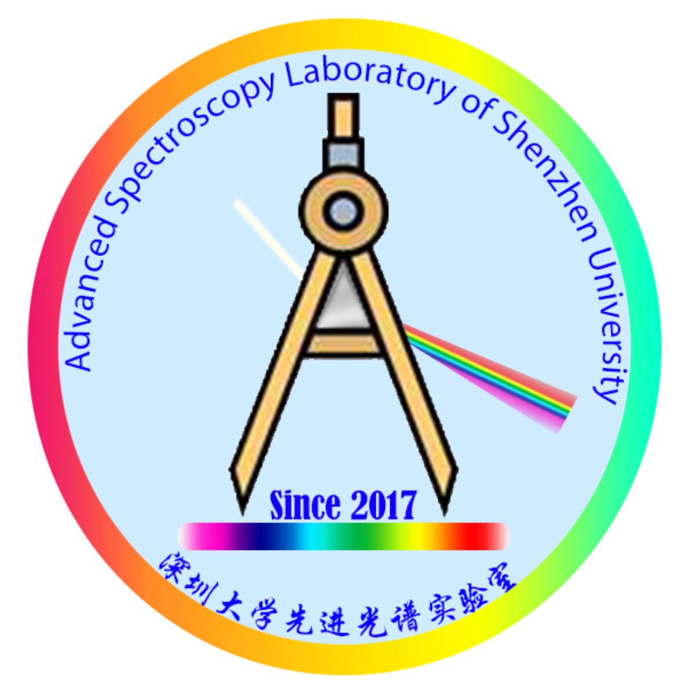
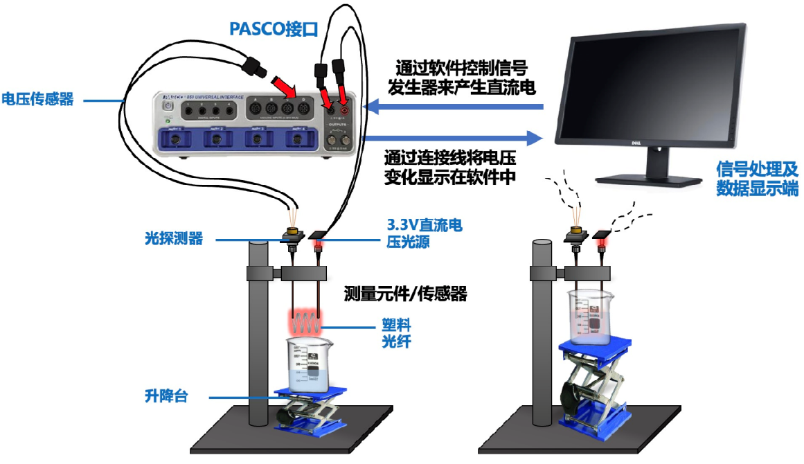

Yan QIN (秦言)PhD. Student @ HKUST
Department of Electronic & Computer Engineering (ECE), |
|
Biography
Hi! I am Yan Qin (秦言), currently a PhD student at Hong Kong University of Science and Technology, focusing on the behavior of carriers in optoelectronic devices. Currently, using various advanced spectroscopic tools, I focus on studying the exciton physical properties of hybrid organic-inorganic perovskites in terms of electron-phonon interaction, hot carrier cooling, Auger recombination and nonlinear optical properties, aiming to reveal its optical properties and provide important reference information for the development of related optoelectronic devices.Feel free to contact me by email if you are interested in discussing or collaborating with me.
Education

|
The Hong Kong University of Science and Technology (HKUST), China PhD. Student in ECE Aug. 2024 - Jul. 2028 (expected) |

|
Shenzhen University (SZU), China B.Sc. in Physics
GPA 90.2 / 100, Ranking 2 / 58
Sep. 2020 - Jun. 2024 |
Research & Visiting Experience
|  |
Advanced Spectroscopy Laboratory, Shenzhen University Aug.2022 – present, Intern Researcher, Shanghai, China Working with Dr. Junzi Li Research content: Low-temperature exciton properties, ultrafast carrier dynamics processes and nonlinear optical properties of perovskites. |
Publications
In preparation
A critical overview on various factors that can affect carrier-phonon coupling, bandgap renormalization and exciton binding energy will be comprehensively discussed, including composition, alloying, morphology and core/shell engineering.Published to The Journal of Physical Chemistry C
Synthesized two hybrid mental halide heterojunction thin films with the R-methylbenzylammonium (R-MBA) and R-1-(1- naphthyl) ethylammonium (R-NEA) as A-site cations.Compared the electron-phonon interaction and ultrafast dynamic processes using temperature-dependent photoluminescence and femtosecond-transient-absorption spectroscopy.
Published to The Journal of Physical Chemistry Letters
Published to Chinese Science Bulletin
Published to Physics Experimentation
Competition Awards (Selected)
|  |
National Undergraduate Physics Experiment Contest: |